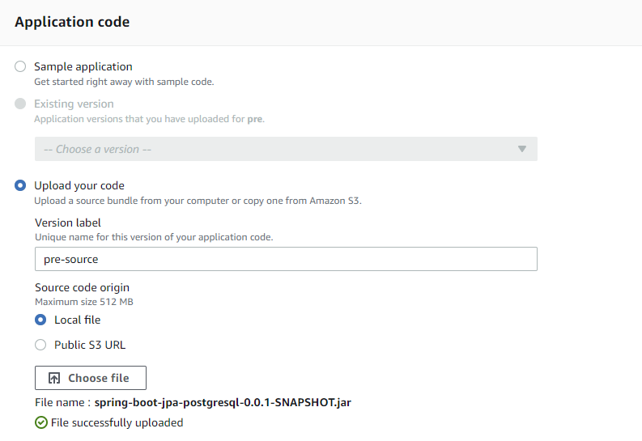
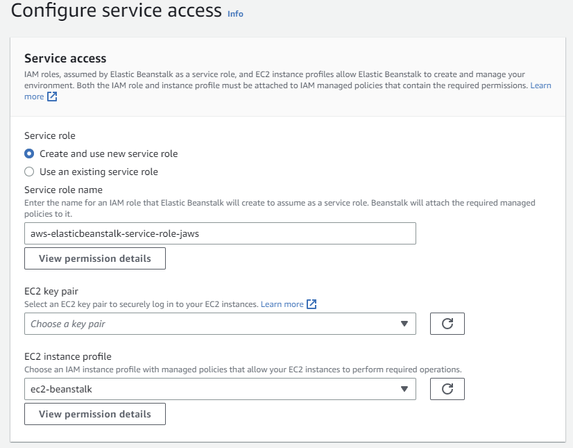
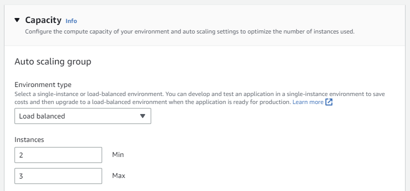
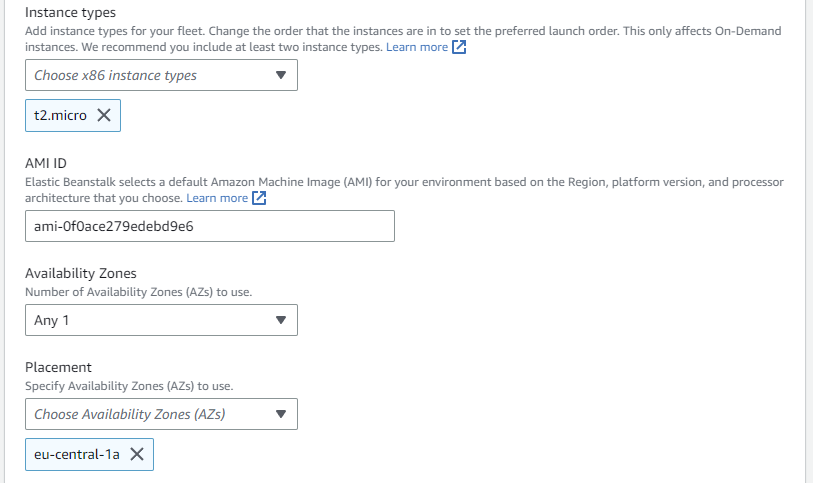
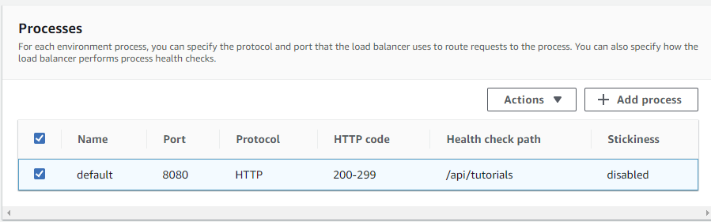
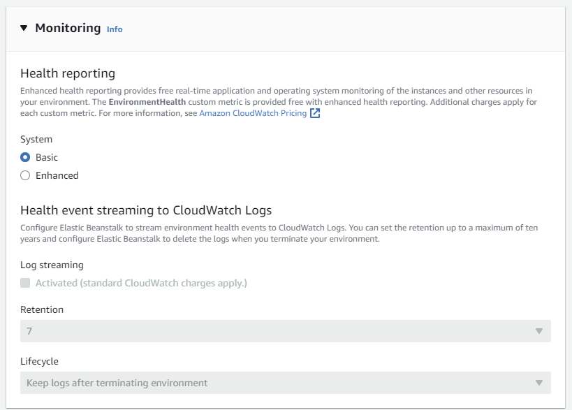
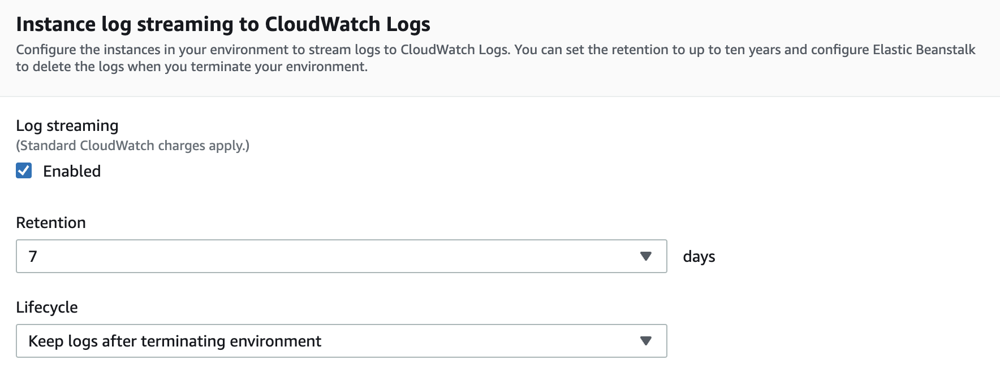
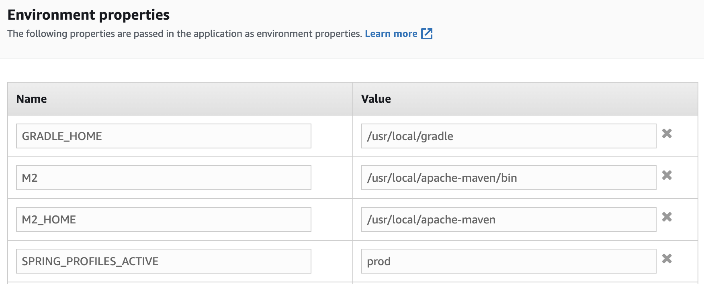

Elastic Beanstalk
High-level view

Create Environment
- Open Elastic Beanstalk console at https://console.aws.amazon.com/elasticbeanstalk/.
- On the application overview page, choose Create a new environment.
- For environment tier, choose the Web server environment.
- Enter an application name.
- Choose platform Java.
- Application code – choose “Upload your code”.
- Upload builded application (jar file). 
- In section Presets choose High availability and choose Next.
- The Configure service access page displays.
- Choose Create and use new service role for Service Role.
- Enter Service role name.
- If the EC2 instance profile dropdown list doesn't list any values to choose from, Choose View permission details. This displays under the EC2 instance profile dropdown list
- A modal window titled View instance profile permissions displays. This window lists the managed profiles that you'll need to attach to the new EC2 instance profile that you create. It also provides a link to launch the IAM console.
- Choose the IAM console link displayed at the top of the window.
- In the IAM console navigation pane, choose Roles.
- Choose Create role.
- Under Trusted entity type, choose AWS service.
- Under Use case, choose EC2.
- Choose Next.
-
Attach the appropriate managed policies. Scroll in the View instance profile permissions modal window to see the managed policies. The policies are also listed here:
AWSElasticBeanstalkWebTier AmazonDynamoDBFullAccess AmazonRDSDataFullAccess SecretsManagerReadWrite CloudWatchFullAccess -
Choose Next and Enter a name for the role.
- Choose Create role.
- Return to the Elastic Beanstalk console window that is open.
- Close the modal window View instance profile permissions.
-
Choose refresh icon, next to the EC2 instance profile dropdown list. This refreshes the dropdown list, so that the Role you just created will display in the dropdown list.

-
The default settings remain in Set up networking, database, and tags step.
- Step Configure instance traffic and scaling.
- In Section Capacity set Environment type to Load balanced.
-
Set Minimum number of instances to 2 and maximum for instances to 3.

-
Set Instance types: t2.micro.
- Set Availability Zones: Any 1.
-
Set Placement: eu-central-1.

-
In section Load Balancer Type choose load balancer type Application Load Balancer.
-
In part Processes change this values:
- Port : 8080
- HTTP code : 200-299
- Health check path : /api/tutorials 
-
Choose Next.
- Step Configure updates, monitoring, and logging.
-
In Section Health reporting set System to Basic.

-
In Section Rolling updates and deployments set Deployment policy to All at once.
- Set Ignore health check to True
-
Enable streaming of the logs to Cloudwatch, by setting the checkbox (We will need this for later analysis in in part Logs analysis using CloudWatch):

-
In section Environment properties introduce new environment variable: SPRING_PROFILES_ACTIVE with value: prod. 
-
Check Review page and submit.
- If you're using AWS Academy account
Note
This will take a few minutes. Beanstalk will create EC2 instance, Elastic load balancer, Auto Scaling Group, Target group, Security Group, CloudWatch Alarm.